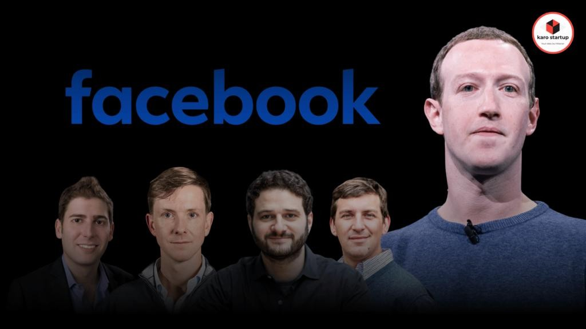
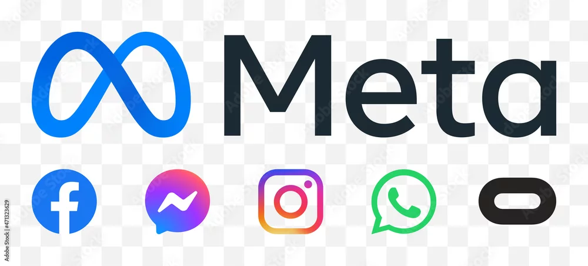
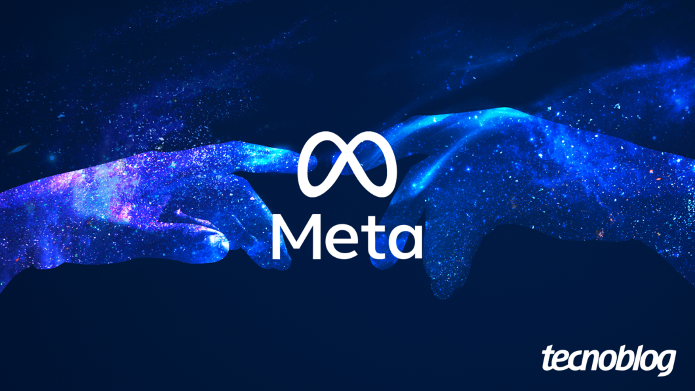

Los inicios de Harvard al mundo
Meta fue fundada en enero de 2004 por Mark Zuckerberg junto con sus compañeros de Harvard: Eduardo Saverin, Andrew McCollum, Dustin Moskovitz y Chris Hughes. El proyecto comenzó como TheFacebook.com, una red social exclusiva para estudiantes universitarios. Su rápido crecimiento atrajo inversiones y, en 2006, se abrió al público general. En pocos años, Facebook se convirtió en una de las plataformas más usadas del planeta, alcanzando 500 millones de usuarios en 2010.

Expansión y adquisiciones estratégicas
La compañía no se limitó a Facebook. En 2012 adquirió Instagram por 1.000 millones de dólares, en 2014 compró WhatsApp por 19.000 millones y también adquirió Oculus VR por 2.000 millones, entrando en el mercado de la realidad virtual. Estas adquisiciones consolidaron a Meta como un conglomerado con más de 3.000 millones de usuarios activos en sus plataformas. Además, lanzó proyectos como Internet.org, para llevar conexión a regiones sin acceso, y exploró el mundo de las criptomonedas con iniciativas como Libra/Diem.

El cambio a Meta y el futuro del Metaverso
El 28 de octubre de 2021, Zuckerberg anunció que Facebook Inc. pasaba a llamarse Meta Platforms, Inc., reflejando un nuevo enfoque: la construcción del Metaverso, un espacio virtual inmersivo que busca integrar lo real y lo digital. Bajo esta visión, Meta desarrolla dispositivos como el Meta Quest Pro y continúa expandiendo sus servicios de redes sociales y comunicación. Con sede en Menlo Park, California, Meta figura entre las empresas más valiosas del mundo, ocupando el puesto 34 en el ranking Global 2000 de Forbes en 2022
